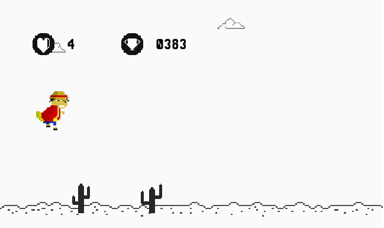

O que é o My Adventurous Dino?
Basicamente ele é um clone do jogo do Dino do Google Chrome, incrementando meu gosto pessoal e idéais ao jogo.
Como jogar
Viva o máximo que puder! O objetivo do jogo é evitar os cactos cortantes que vem da direita da tela, coletar corações e sobreviver pelo maior tempo possível. Você consegue?
Créditos

O jogo foi programado por José Wesley De Lima Silva como projeto prático não comercial open-source. O mesmo também foi o responsável por desenhar os gráficos do jogo.
Sons e músicas
O restante das mídias foram encontradas e trânsferidas da Internet, enfatizando o consentimento do produtor, é claro.